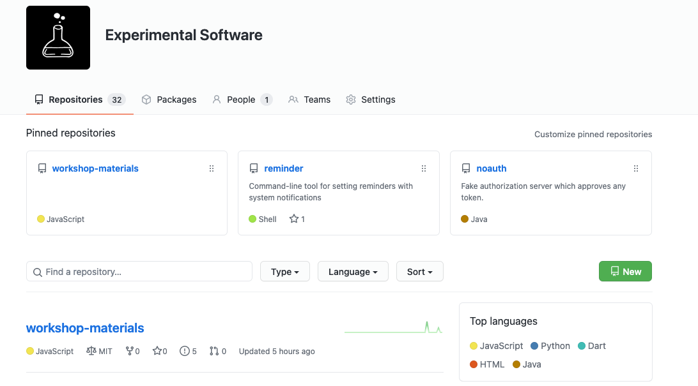

---
---

<section>
  
  <section>
    <h2>Organisationen</h2>
    
    
  </section>
  
  <aside class="notes">
    <ul>
      <li>verwaltet Repositories</li>
      <li>Öffentliche Repositories als Aushängeschild</li>
        <ul>
          <li>Siehe https://github.com/ePages-de in privatem Fenster</li>
        </ul>
      <li>Teams</li>
        <ul>
          <li>Übersicht über Teams</li>
          <li>Personen zu Teams zuweisen</li>
          <li>Berechtigungen für Teams</li>
        </ul>
    </ul>
  </aside>
  
</section>
